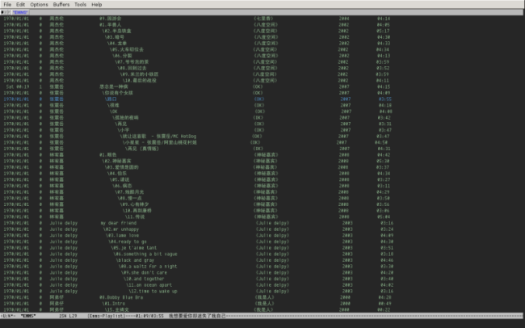

Table of Contents
What is EMMS?
就像本页题目说的，EMMS 的全称是‘Emacs MultiMedia System’。顾名思义， 可以知道它是非著名编辑工具 Emacs 的众多良莠不齐扩展包中的一员，显然这次这个是绝对好用的。 它能拿来做什么？让我们再望文生义一下其实就明了了，多媒体系统自然是拿来娱乐大众的！ 闲话休提，老规矩先贴官方介绍。
EMMS is the Emacs Multimedia System. It tries to be a clean and small application to play multimedia files from Emacs using external players. Many of it's ideas are derived from MpthreePlayer , but it tries to be more general and cleaner.
The fact that EMMS is based on external players makes it powerful, because it supports all formats that those players support, with no effort from your side.
How far have EMMS got?
在我写这篇东西的时候，debian 源里面的版本还是 2.1 ，官方的则是 3.0 于6月29日发布。
它能做的事情已经足够多的了，下面是我‘自己’的配置（大部分来自于 kid 的 50emms.el，
他的那从文件名解析标签的两个函数很好用）。
;; add emms directory to load-path and import components wanted. (add-to-list 'load-path (expand-file-name "/emacs/packages/emms-3.0/") t) (require 'emms-playlist-mode) (require 'emms-source-file) (require 'emms-source-playlist) (require 'emms-player-simple) (require 'emms-player-mplayer) (require 'emms-info) (require 'emms-cache) (require 'emms-playing-time) (require 'emms-volume) (require 'emms-lyrics)
其实用不着像上面那样复杂，参考 emms 官方的使用手册，只要如此便可以，
(require 'emms-setup) ; load setup script. (emms-standard) ; standard setup will be okay. ;; I didn't go figure what the default players truely are. ;; But the code works on my machine. These are mpg321 and mplayer. (emms-default-players) ; use default players.
这么做唯一的不好的地方只是可能会加入一些你不需要的东西，可选的有最小化加载（连播放列表的 buffer
都没有好像）、标准和小白鼠式加载。不过据说其实都还很稳定，而且能尝试许多新特性，
比如像 WMP 或者 iTunes 一样浏览你的音乐文件同时也提供了许多快速找歌的功能，按 artist、
albumn、year 等等。可惜前提是标签能够正确解析。
歌词显示的配置，显示效果参考截图。具体的实现方式是这样的，在 mode-line 上面显示播放时间和歌词，
使用叶文彬（其实我不认识他-_-）的那个 =scroll-mode-line= 插件让歌词滚动起来就差不多了。
可以到这里看看他的 =emms= 配置以及效果，那个插件在那也有下载。
;; lyrics settings, don't display on minibuffer. (when (fboundp 'emms-lyrics) (emms-lyrics 1)) (setq emms-lyrics-coding-system 'gbk emms-lyrics-display-on-minibuffer nil emms-lyrics-dir "~/music/lyrics") ;; YeWenbin's emacs extention, scroll the mode line, wrap up some space. (require 'scroll-mode-line-mode) (scroll-mode-line-mode 1)
| EMMS Screenshot |
William Xu's EMMS setup
emms playlist with last-played time, play-count, artist, title (tree-like for the same album) and various other info, and lyrics on the mode line. Fields in a row are (left to right): last played time, play-count, artist, (tracknumber, title), album, year, time. Basically, my configuration is focused on making full use of emms in a single playlist buffer.
最近我跑去 EMMS 的主页上看了看有没有新东西，看到这个。效果图和配置在主 页上都有。基本上是拿来用就可以了，需要注意的是：
- cache/history 等缓存相关的东西事先最好清除一下。一般在 ~/.emacs.d/emms 目录，直接删掉好了。
- emms 默认用来解析音频文件标签的外部工具分别是 ogginfo 和 mp3info。
- 歌词显示的问题，如前文所说的，不过好像只会找于文件名相同的 .lrc 文 件，还得研究。
|  |
| emms@emacs under wmii |